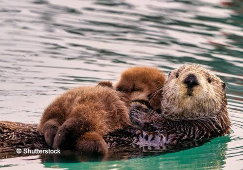

- history
- habitat
- diet
- friends
Otters are carnivorous mammals in the subfamily Lutrinae. The 14 extant otter species are all semiaquatic, both freshwater and marine. Lutrinae is a branch of the Mustelidae family, which includes weasels, badgers, mink, and wolverines, among other animals.Otters are distinguished by their long, slim bodies, powerful webbed feet for swimming, and their dense fur, which keeps them warm and buoyant in water. They are playful animals, engaging in activities like sliding into water on natural slides and playing with stones.
